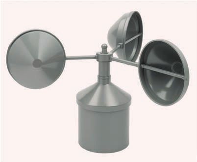

Wind
Wind occurs due to differences in atmospheric pressure in the atmosphere. Thus, wind is air moving from areas of high atmospheric pressure to low atmospheric pressure. For example, if you take an inflated ball and then puncture it with a needle, the air inside will rush out quickly. This happens because the atmospheric pressure inside the ball is higher than outside. Therefore, the air inside the ball (at high pressure) escapes to the outside (at low pressure).
Measurement of wind
When the wind blows, there are two things we can observe: the direction of the wind and the speed of the wind. In normal conditions, you can determine the direction of the wind by observing in which side trees or leaves bend. The speed of the wind can be identified by watching how much trees and leaves sway or how various objects are blown around. For accuracy purposes, special instruments are used to measure wind direction and speed. An instrument used to measure wind speed is called an anemometer, and an instrument used to measure wind direction is called a wind vane.
Anemometer
This is an instrument with three or four bowl-shaped cups held by metal arms that rotate when the wind blows. The speed of the rotation of the cups indicates the wind speed. The number of rotations is recorded on a gauge within the device. Wind speed is measured in kilometres per hour. Figure 3 shows an anemometer.
